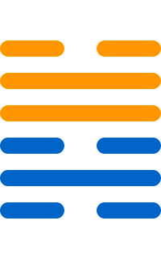

第四十七卦
困卦

卦辞
亨，贞，大人吉，无咎，有言不信。
困卦象征困境、困难与限制。卦辞意为：亨通，坚守正道，大人吉祥，无灾害，有言语不信。困卦教导我们在困境中保持正道，终将亨通。
彖传
困，刚掩也。险以说，困而不失其所，亨，其唯君子乎？贞大人吉，以刚中也。有言不信，尚口乃穷也。
彖传说：困，刚掩也。险以说，困而不失其所，亨，其唯君子乎？贞大人吉，以刚中也。有言不信，尚口乃穷也。
象传
泽无水，困。君子以致命遂志。
象传说：泽无水，就是困卦。君子应当效法这种精神，致命遂志。泽中无水，象征困境中的坚持。
爻辞
初六：臀困于株木，入于幽谷，三岁不觌
臀困于株木，入于幽谷，三年不见。
初六爻位于最下方，困于株木。臀部困于株木，入于幽谷，三年不见，表示困境的开始。
九二：困于酒食，朱绂方来，利用亨祀，征凶，无咎
困于酒食，朱绂方来，利于亨祀，征伐凶险，无灾害。
九二爻得中，困于酒食。困于酒食，朱绂方来，利于亨祀，征凶，无咎，表示虽有困难但无害。
六三：困于石，据于蒺藜，入于其宫，不见其妻，凶
困于石，据于蒺藜，入于其宫，不见其妻，凶险。
六三爻位置不当，困于石。困于石，据于蒺藜，入于其宫，不见其妻，凶，表示极度困境。
九四：来徐徐，困于金车，吝，有终
来徐徐，困于金车，困难，有终。
九四爻接近君位，来徐徐。来徐徐，困于金车，吝，有终，表示虽困难但有结果。
九五：劓刖，困于赤绂，乃徐有说，利用祭祀
劓刖，困于赤绂，乃徐有说，利于祭祀。
九五爻居中尊位，劓刖。劓刖，困于赤绂，乃徐有说，利于祭祀，表示困境中的解脱。
上六：困于葛藟，于臲卼，曰动悔。有悔，征吉
困于葛藟，于臲卼，曰动悔。有悔，征伐吉祥。
上六爻位于极点，困于葛藟。困于葛藟，于臲卼，曰动悔。有悔，征吉，表示悔过则吉。